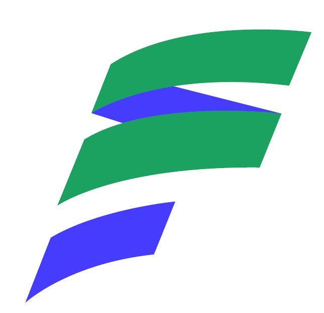

Mengenal lebih dekat PT. Fanka Solusi Indonesia dan komitmen kami terhadap keunggulan engineering sejak 2020
PT. Fanka Solusi Indonesia didirikan pada tahun 2020 dan bergerak di bidang perencanaan, desain, serta implementasi proyek teknik. Kami melayani berbagai disiplin ilmu teknik termasuk sipil, mekanikal, elektrikal, kimia, dan lingkungan.
Dengan pendekatan komprehensif dan inovatif, kami berkomitmen memberikan solusi terbaik kepada setiap klien. Tim profesional kami telah menyelesaikan proyek-proyek berskala nasional di berbagai industri strategis Indonesia.
Keunggulan kami terletak pada spesialisasi di bidang CEMS (Continuous Emission Monitoring System), di mana kami telah melayani lebih dari 30 klien industri terkemuka, termasuk PLN Group, Pertamina, dan Pupuk Indonesia Group.

Menjadi perusahaan terpercaya di bidang jasa engineering di semua bidang
Meningkatkan kualitas layanan engineering, efisiensi, produktivitas, dan keselamatan
Membangun hubungan bisnis yang baik, komunikasi intens, solusi komprehensif, win-win solution
Service Excellence · Productive · Integrity · Respect · Innovative · Teamwork
Tahun 2020 di Bekasi, Jawa Barat, Indonesia
3 kantor strategis di Bekasi & Tambun, Jawa Barat
Proyek di seluruh Indonesia & jaringan internasional (Malaysia, Eropa)